BRA:T2
Saved fallback group — not a confirmed identity
Saved: Brazil · -54.406°, -14.238° on map · BRA:c9a395c2d321cd60
Candidate: Brazil · -48.471°, -27.604° on map · BRA:eff3200271a767a0
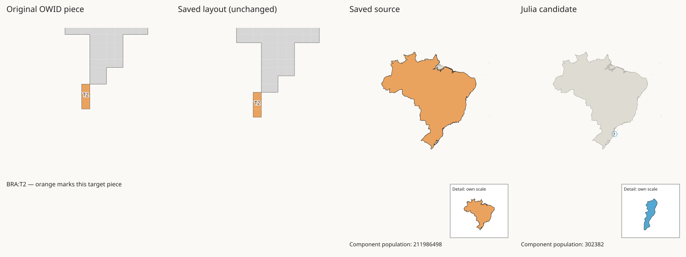
The saved layout is unchanged. This page compares source identities, not proposed tile sizes. There are 44 changed candidates in 9 country scopes.
Saved layout · Change table · Input hashes
Both tile panels use the same scale within a card. Both main geography panels also use the same scale within a card. Tile coordinates and geographic coordinates have different scales. Each geography detail inset has its own scale. North is up. Orange marks the selected saved source; blue marks the candidate. Grey shows other pieces in the same population scope. Other countries are omitted. A dashed circle locates a component too small to see at the main map scale.
Orange pieces have changed candidates. T labels identify the same target piece in both panels.
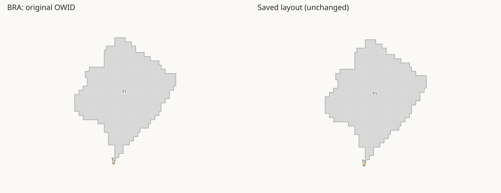
Saved fallback group — not a confirmed identity
Saved: Brazil · -54.406°, -14.238° on map · BRA:c9a395c2d321cd60
Candidate: Brazil · -48.471°, -27.604° on map · BRA:eff3200271a767a0

Orange pieces have changed candidates. T labels identify the same target piece in both panels.
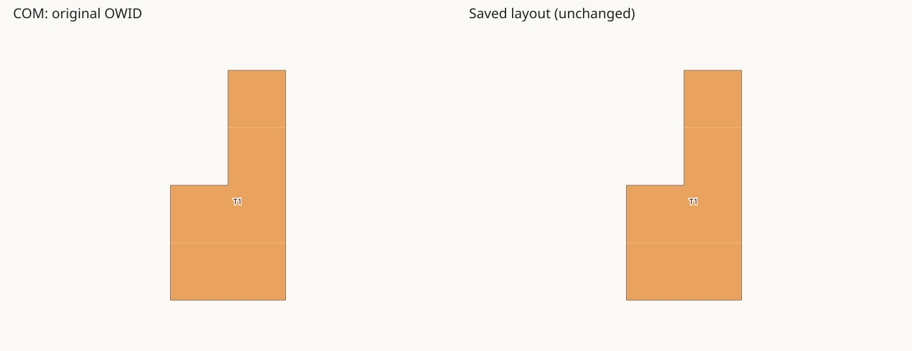
Saved identity: automatic_unreviewed
Saved: Comoros · 43.356°, -11.647° on map · COM:306e297809981428
Candidate: Comoros · 43.746°, -12.305° on map · COM:1fe8ef77b8d7172f
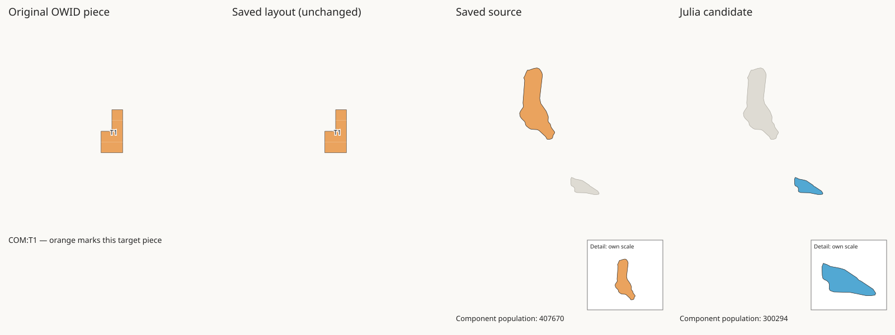
Orange pieces have changed candidates. T labels identify the same target piece in both panels.
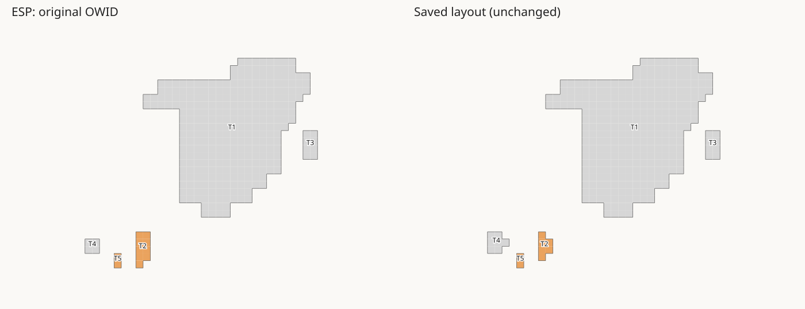
Saved identity: automatic_unreviewed
Saved: Spain · -15.593°, 27.957° on map · ESP:d5030a8f162b4ff0
Candidate: Spain · -13.647°, 29.041° on map · ESP:e886baf081d9b038
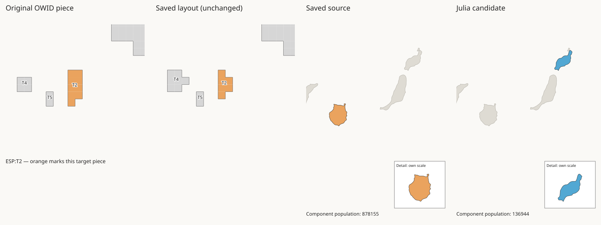
Saved identity: automatic_unreviewed
Saved: Spain · -13.647°, 29.041° on map · ESP:e886baf081d9b038
Candidate: Spain · -15.593°, 27.957° on map · ESP:d5030a8f162b4ff0
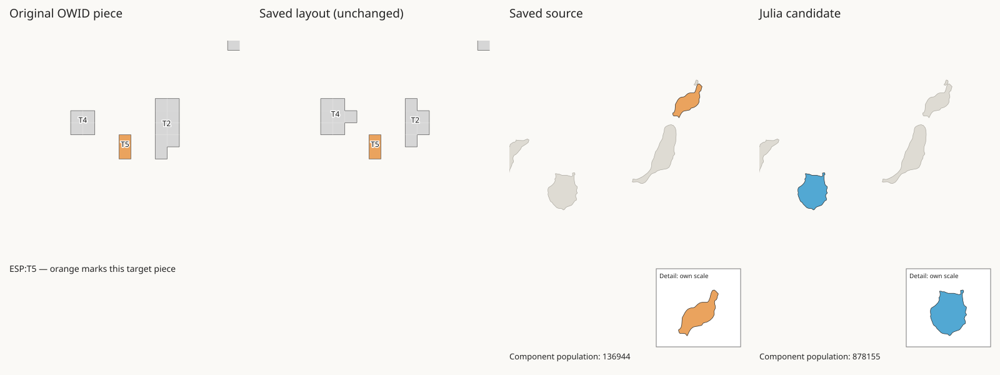
Orange pieces have changed candidates. T labels identify the same target piece in both panels.
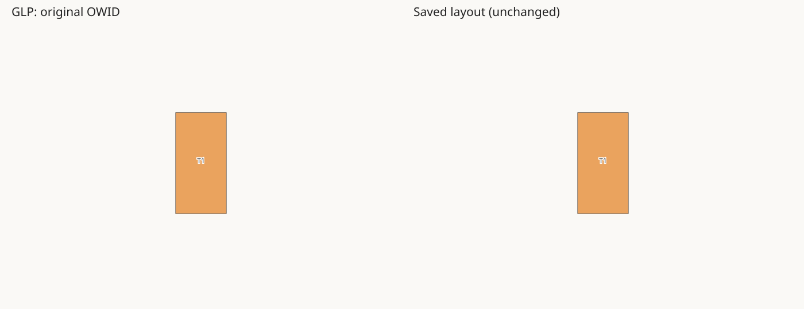
Saved identity: automatic_unreviewed
Saved: Guadeloupe · -61.673°, 16.157° on map · GLP:6d7ccc1850ff782c
Candidate: Guadeloupe · -61.356°, 16.358° on map · GLP:53697300cc251789
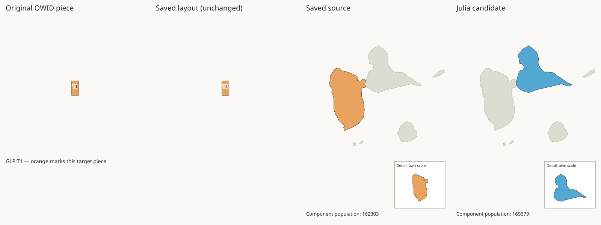
Orange pieces have changed candidates. T labels identify the same target piece in both panels.
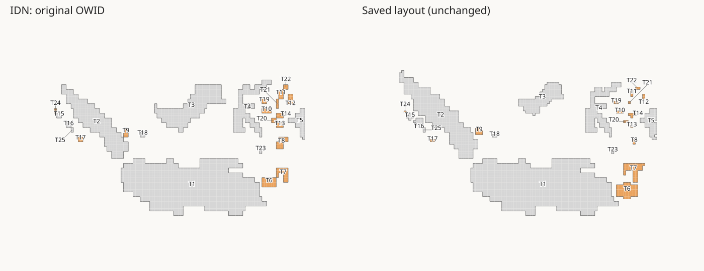
Saved identity: automatic_unreviewed
Saved: Indonesia · 115.081°, -8.453° on map · IDN:43eb860ae00ba2ae
Candidate: Indonesia · 124.315°, -9.668° on map · IDN:41ba51e85ddbb728
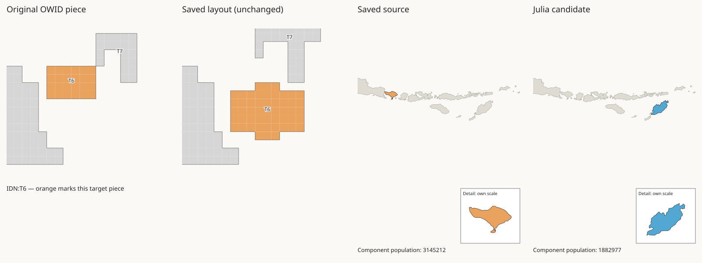
Saved identity: automatic_unreviewed
Saved: Indonesia · 124.315°, -9.668° on map · IDN:41ba51e85ddbb728
Candidate: Indonesia · 128.131°, -3.639° on map · IDN:a2e8d108d88be94f
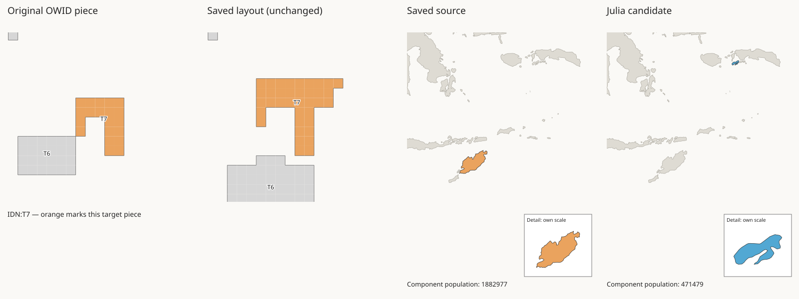
Saved fallback group — not a confirmed identity
Saved: Indonesia · 128.131°, -3.639° on map · IDN:a2e8d108d88be94f
Candidate: Indonesia · 129.359°, -3.324° on map · IDN:7a59bb18e03f91d9
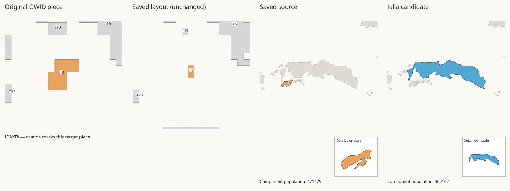
Saved identity: automatic_unreviewed
Saved: Indonesia · 105.979°, -2.297° on map · IDN:8b7b64d2940fb8dc
Candidate: Indonesia · 104.45°, 1.027° on map · IDN:022bfe9dad3f0890
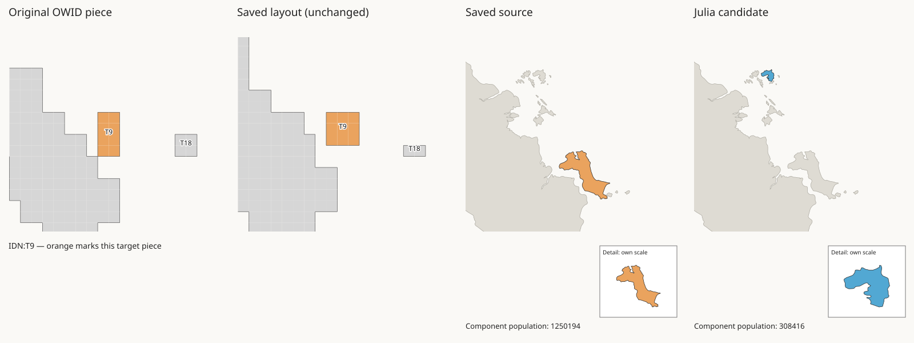
Saved identity: automatic_unreviewed
Saved: Indonesia · 122.528°, -5.02° on map · IDN:746e7e525dfc90c5
Candidate: Indonesia · 128.149°, 0.648° on map · IDN:7d68fcb39519952c
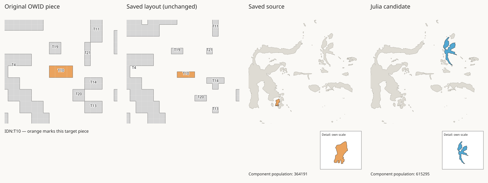
Saved identity: automatic_unreviewed
Saved: Indonesia · 128.149°, 0.648° on map · IDN:7d68fcb39519952c
Candidate: Indonesia · 126.798°, 3.793° on map · IDN:437b9af49964fda2
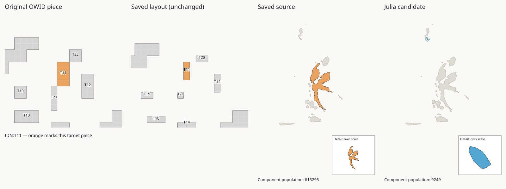
Saved fallback group — not a confirmed identity
Saved: Indonesia · 128.149°, 0.648° on map · IDN:7d68fcb39519952c
Candidate: Indonesia · 131.262°, 1.06° on map · IDN:fca9e7ad1184ac6b
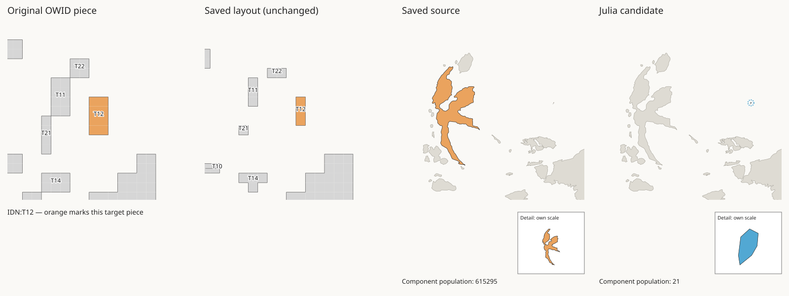
Saved identity: automatic_unreviewed
Saved: Indonesia · 128.131°, -3.639° on map · IDN:a2e8d108d88be94f
Candidate: Indonesia · 136.161°, -1.749° on map · IDN:735932740a80f252
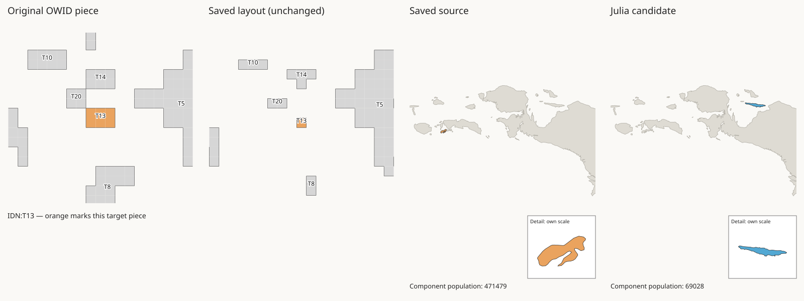
Saved identity: automatic_unreviewed
Saved: Indonesia · 129.359°, -3.324° on map · IDN:7a59bb18e03f91d9
Candidate: Indonesia · 135.877°, -0.926° on map · IDN:e03a8d3be0282f36
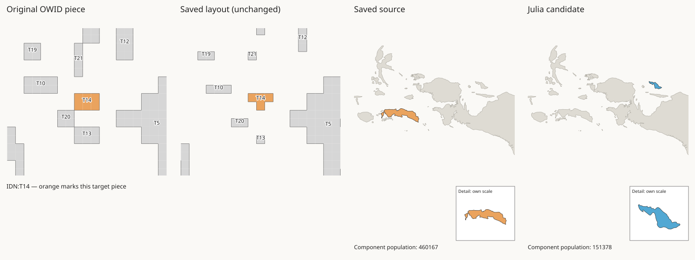
Saved identity: automatic_unreviewed
Saved: Indonesia · 104.45°, 1.027° on map · IDN:022bfe9dad3f0890
Candidate: Indonesia · 105.979°, -2.297° on map · IDN:8b7b64d2940fb8dc
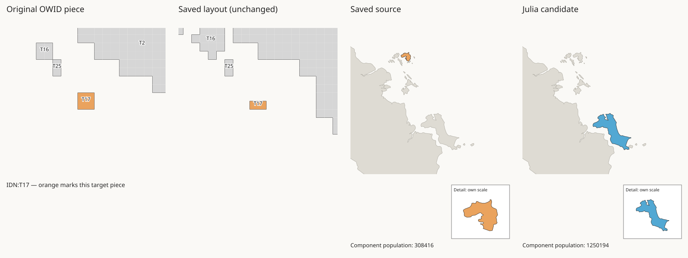
Saved identity: automatic_unreviewed
Saved: Indonesia · 117.608°, 3.342° on map · IDN:a9a80def964512c2
Candidate: Indonesia · 128.159°, 2.346° on map · IDN:812e8b35e985d0cb
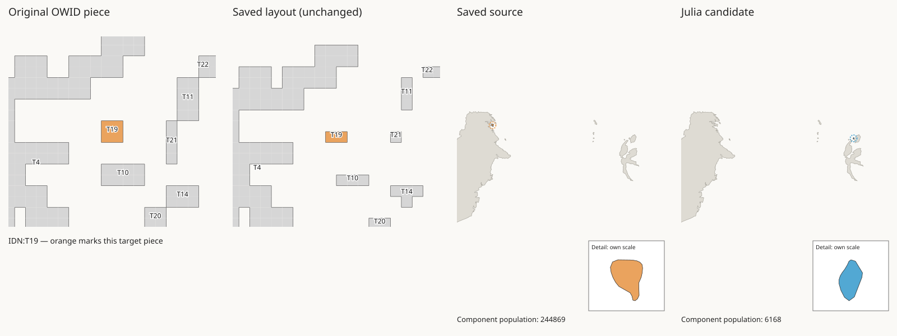
Saved identity: automatic_unreviewed
Saved: Indonesia · 122.893°, -5.038° on map · IDN:b212698e7fc50989
Candidate: Indonesia · 127.595°, -0.593° on map · IDN:2f668109d000a646
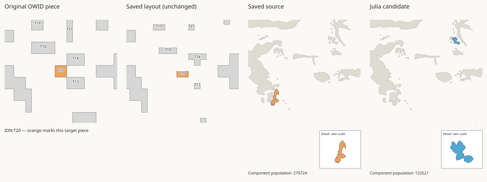
Saved identity: automatic_unreviewed
Saved: Indonesia · 135.877°, -0.926° on map · IDN:e03a8d3be0282f36
Candidate: Indonesia · 128.446°, 2.314° on map · IDN:fd97b33af0678261
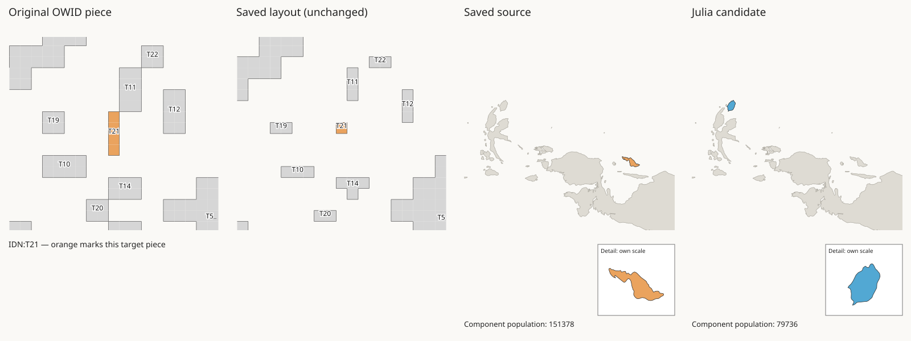
Saved fallback group — not a confirmed identity
Saved: Indonesia · 128.149°, 0.648° on map · IDN:7d68fcb39519952c
Candidate: Indonesia · 126.793°, 4.272° on map · IDN:60f0f1d972640ca3
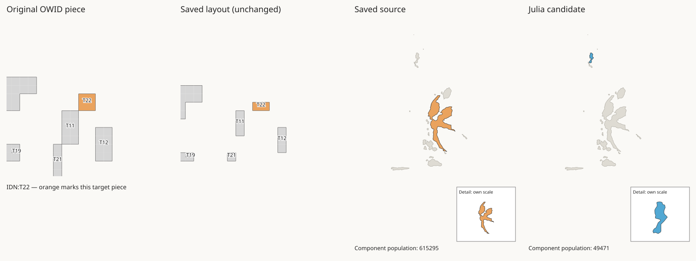
Saved identity: automatic_unreviewed
Saved: Indonesia · 102.258°, 1.449° on map · IDN:a6a2a921eb1e80b9
Candidate: Indonesia · 96.087°, 2.643° on map · IDN:e0b729a0e374c21c
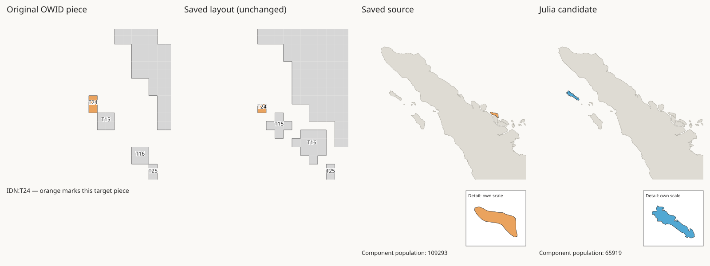
Orange pieces have changed candidates. T labels identify the same target piece in both panels.
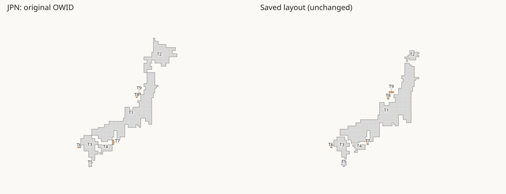
Saved fallback group — not a confirmed identity
Saved: Japan · 130.818°, 32.485° on map · JPN:3876400cea5031e2
Candidate: Japan · 126.754°, 26.347° on map · JPN:26ec49491563bc88
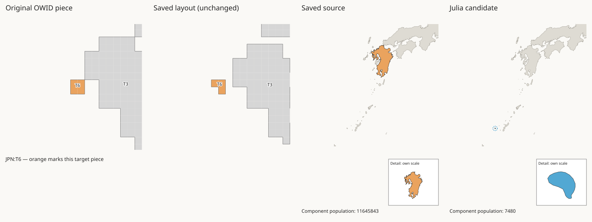
Saved identity: automatic_unreviewed
Saved: Japan · 134.844°, 34.4° on map · JPN:ccbb1b73257464db
Candidate: Japan · 129.434°, 28.315° on map · JPN:44be296f191b30d1
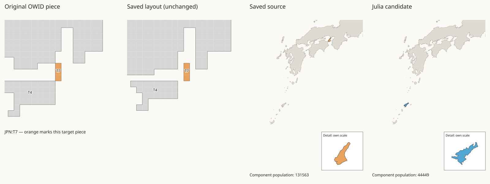
Saved fallback group — not a confirmed identity
Saved: Japan · 136.466°, 37.49° on map · JPN:f07fed45233efce3
Candidate: Japan · 134.844°, 34.4° on map · JPN:ccbb1b73257464db
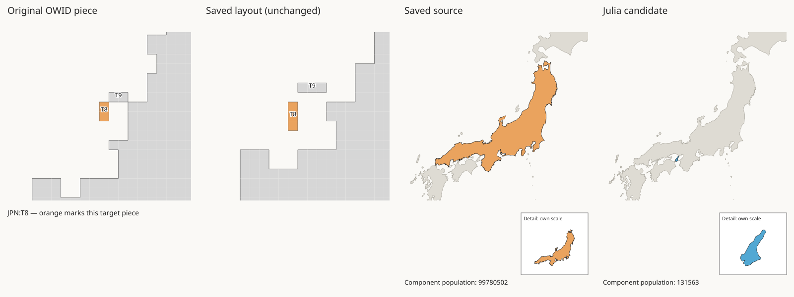
Saved fallback group — not a confirmed identity
Saved: Japan · 136.466°, 37.49° on map · JPN:f07fed45233efce3
Candidate: Japan · 138.394°, 38.06° on map · JPN:e121bcc962504d09
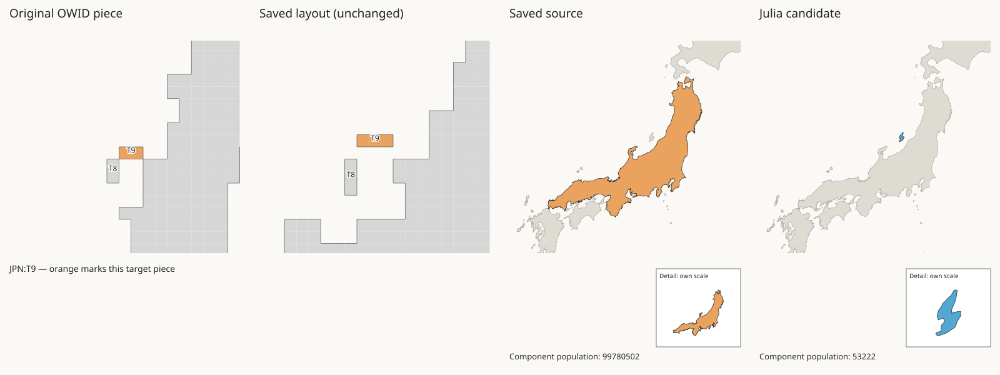
Orange pieces have changed candidates. T labels identify the same target piece in both panels.
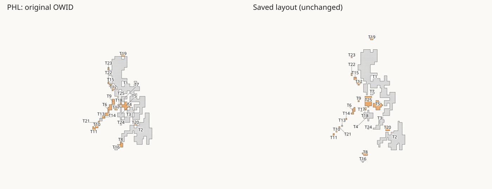
Saved identity: automatic_unreviewed
Saved: Philippines · 124.787°, 10.789° on map · PHL:6db0873e452de6c9
Candidate: Philippines · 122.514°, 11.182° on map · PHL:d9dc6d8657118070
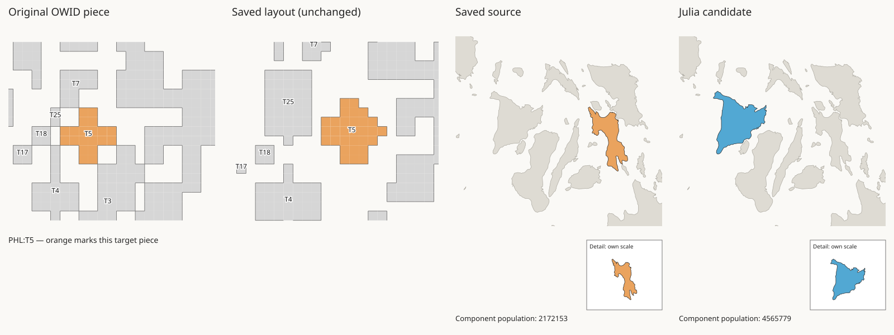
Saved fallback group — not a confirmed identity
Saved: Philippines · 120.93°, 12.872° on map · PHL:9f45a34a40c23d0d
Candidate: Philippines · 119.613°, 11.053° on map · PHL:27feb26a05be9ab0
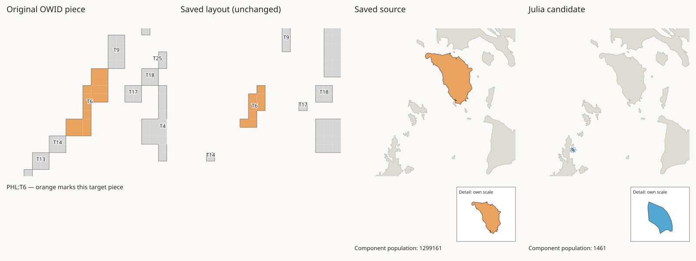
Saved fallback group — not a confirmed identity
Saved: Philippines · 124.258°, 7.698° on map · PHL:7516d4fddea7755b
Candidate: Philippines · 122.071°, 6.573° on map · PHL:2ce786cb39ab6f61
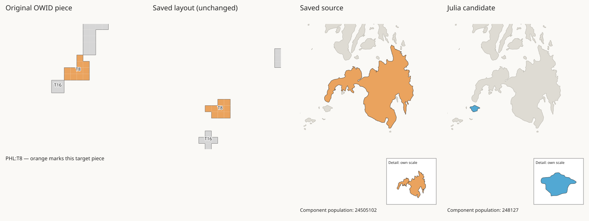
Saved identity: automatic_unreviewed
Saved: Philippines · 120.93°, 12.872° on map · PHL:9f45a34a40c23d0d
Candidate: Philippines · 120.1°, 12.146° on map · PHL:1dd43cf514a84339
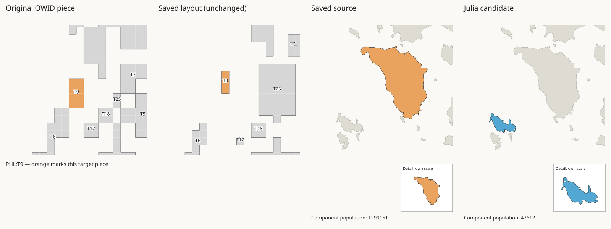
Saved identity: automatic_unreviewed
Saved: Philippines · 118.457°, 9.879° on map · PHL:dab4eac01b067017
Candidate: Philippines · 117.223°, 8.303° on map · PHL:d9e5fbb3b8320eed
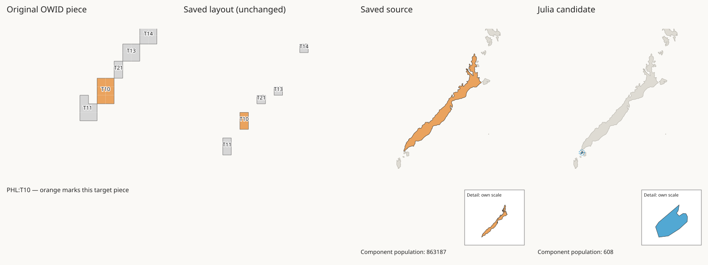
Saved fallback group — not a confirmed identity
Saved: Philippines · 118.457°, 9.879° on map · PHL:dab4eac01b067017
Candidate: Philippines · 117.179°, 8.165° on map · PHL:7355cb5ceea5d8cc
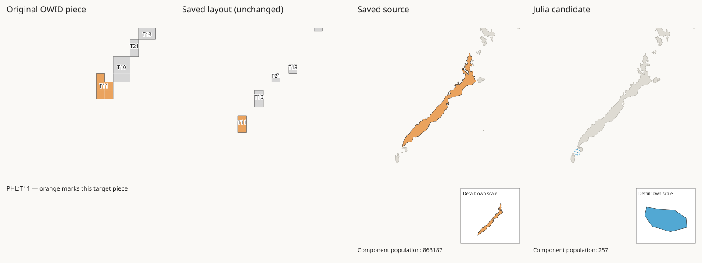
Saved fallback group — not a confirmed identity
Saved: Philippines · 121.972°, 15.591° on map · PHL:eb1fb8d27ecf0027
Candidate: Philippines · 121.971°, 13.385° on map · PHL:27694b49fed5e295
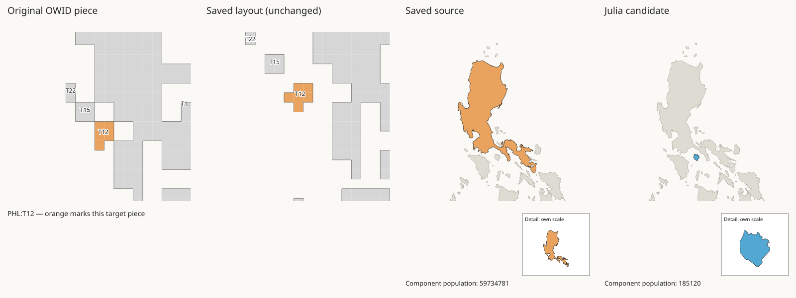
Saved fallback group — not a confirmed identity
Saved: Philippines · 118.457°, 9.879° on map · PHL:dab4eac01b067017
Candidate: Philippines · 119.882°, 10.545° on map · PHL:17d6497df5b6e49c
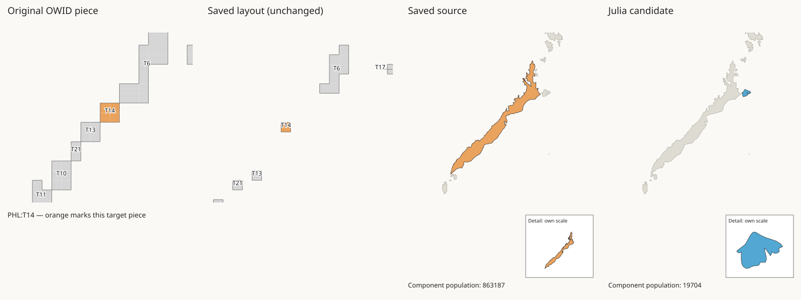
Saved fallback group — not a confirmed identity
Saved: Philippines · 121.972°, 15.591° on map · PHL:eb1fb8d27ecf0027
Candidate: Philippines · 120.93°, 12.872° on map · PHL:9f45a34a40c23d0d
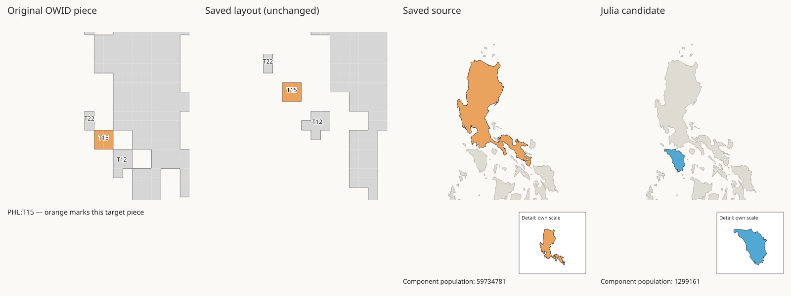
Saved identity: automatic_unreviewed
Saved: Philippines · 121.971°, 13.385° on map · PHL:27694b49fed5e295
Candidate: Philippines · 121.056°, 10.864° on map · PHL:f21f5ad8ffc20986
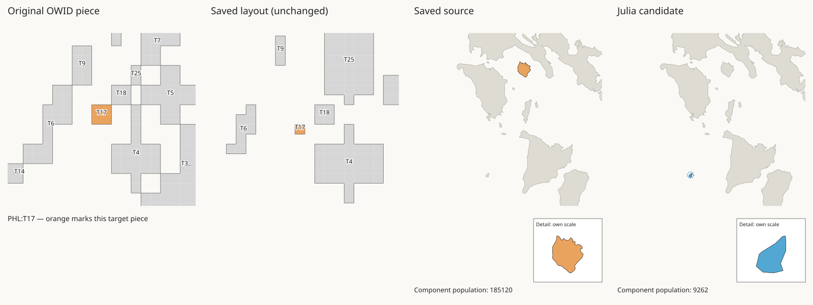
Saved identity: automatic_unreviewed
Saved: Philippines · 123.989°, 10.288° on map · PHL:21362b5a399c84c0
Candidate: Philippines · 122.61°, 10.591° on map · PHL:124f53ed2a9a90b2
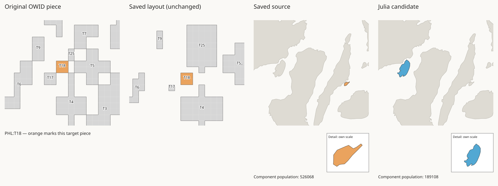
Saved fallback group — not a confirmed identity
Saved: Philippines · 121.972°, 15.591° on map · PHL:eb1fb8d27ecf0027
Candidate: Philippines · 121.913°, 18.917° on map · PHL:6aed9d86b205f405
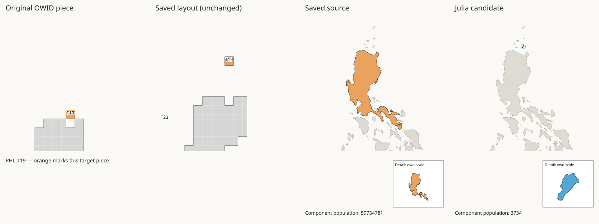
Saved identity: automatic_unreviewed
Saved: Philippines · 124.213°, 9.878° on map · PHL:726d0196a803e063
Candidate: Philippines · 123.989°, 10.288° on map · PHL:21362b5a399c84c0
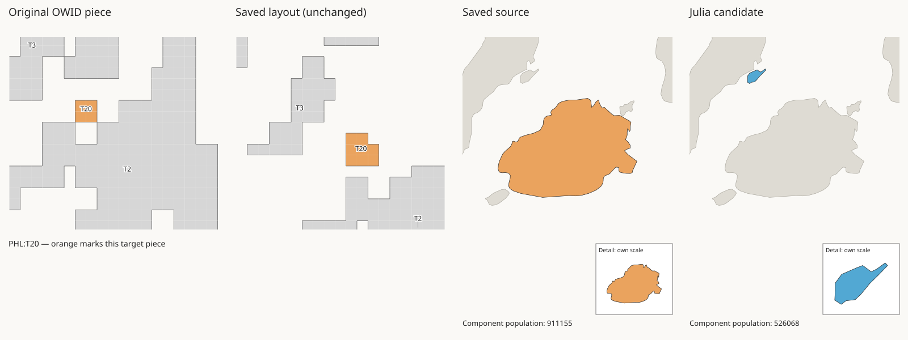
Saved fallback group — not a confirmed identity
Saved: Philippines · 118.457°, 9.879° on map · PHL:dab4eac01b067017
Candidate: Philippines · 117.315°, 8.257° on map · PHL:f2fc447607d99b4e
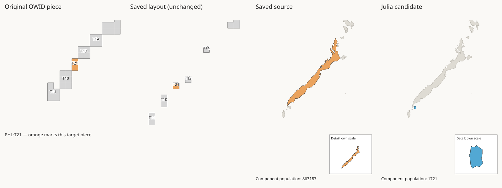
Saved fallback group — not a confirmed identity
Saved: Philippines · 121.972°, 15.591° on map · PHL:eb1fb8d27ecf0027
Candidate: Philippines · 120.183°, 13.77° on map · PHL:f77645f0ecf03367
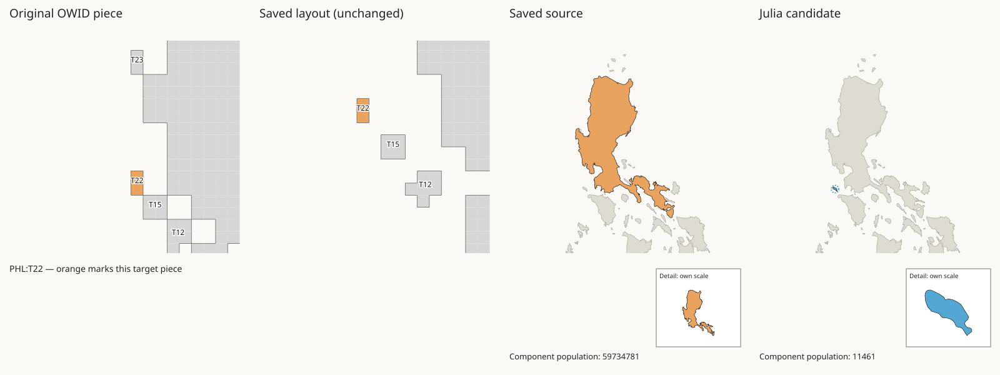
Saved fallback group — not a confirmed identity
Saved: Philippines · 121.972°, 15.591° on map · PHL:eb1fb8d27ecf0027
Candidate: Philippines · 119.967°, 16.29° on map · PHL:a17aba188931e174
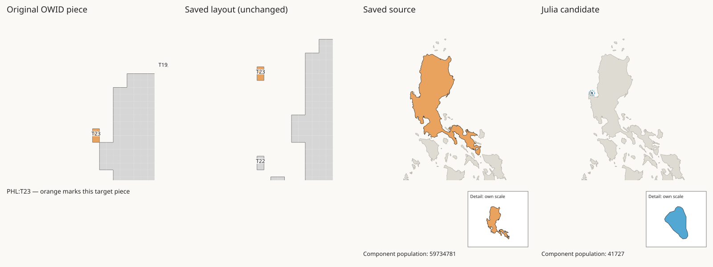
Saved identity: automatic_unreviewed
Saved: Philippines · 122.61°, 10.591° on map · PHL:124f53ed2a9a90b2
Candidate: Philippines · 122.039°, 12.385° on map · PHL:55f4748ebb0e9d7b
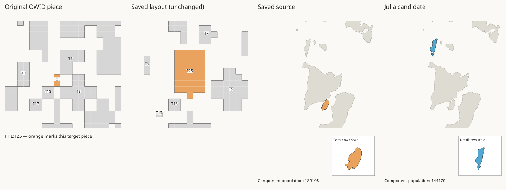
Orange pieces have changed candidates. T labels identify the same target piece in both panels.
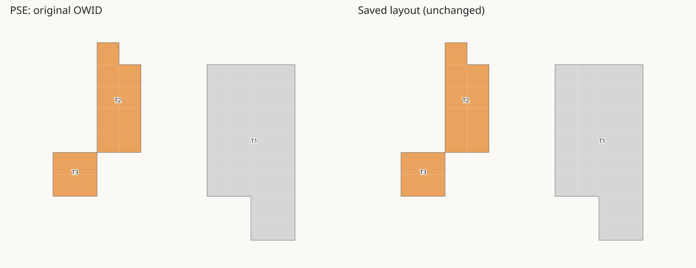
Saved fallback group — not a confirmed identity
Saved: West Bank · 35.22°, 31.944° on map · WEB:8660f88c9871d216
Candidate: No candidate
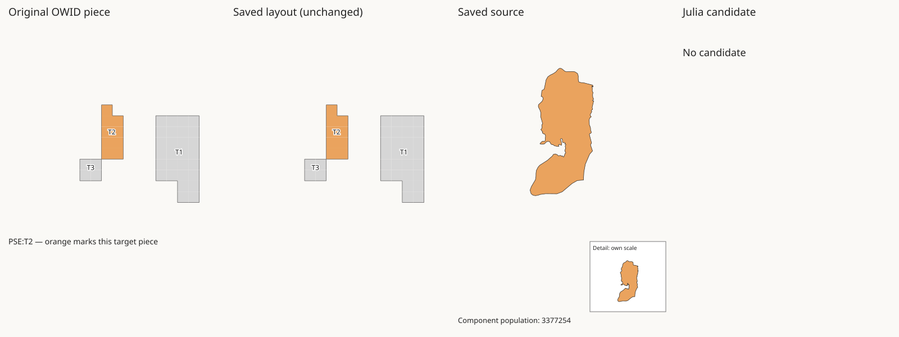
Saved fallback group — not a confirmed identity
Saved: West Bank · 35.22°, 31.944° on map · WEB:8660f88c9871d216
Candidate: Gaza · 34.378°, 31.397° on map · GAZ:0cd9171edc8ff269
Orange pieces have changed candidates. T labels identify the same target piece in both panels.
Saved identity: automatic_unreviewed
Saved: Vanuatu · 166.885°, -15.142° on map · VUT:3e9e300e853e9a46
Candidate: Vanuatu · 167.494°, -16.227° on map · VUT:bd5eb82470d265f3
This is a review of automatic candidates. No candidate on this page has changed the saved layout.